编写目的
本文档旨在指导用户正确使用江苏省两化融合诊断服务平台，在该平台中企业用户可以企业申请，职能部门可以审批。
文档范围
- 读者对象
- 阅读范围
- 企业用户
- 阅读全部内容
- 市级人员
- 阅读全部内容
- 江苏省工业和信息化厅
- 阅读全部内容
环境建议
- 浏览器
- 版本要求
- 系统
- Microsoft Edge
- 13及以上版本
- Win10
- Chrome
- 54及以上版本
- Win7及以上
- 360极速浏览器
- v8.5及以上版本
- Win7及以上
- 火狐浏览器
- 71.0及以上版本
- Win7及以上
江苏省两化深度融合诊断服务平台概括
江苏省两化融合诊断服务平台包括“企业入口”、“职能部门入口”和“诊断专家入口”三大功能模块，下面详情讲解各模块的需求：
企业入口
企业用户登录到江苏省两化融合诊断服务平台，进入企业报名入口。企业用户可以进行企业报名、企业自评估、职能部门推荐/遴选、在线诊断服务、查看诊断报告操作。
职能部门入口
职能单位登录到江苏省两化融合诊断服务平台，进入职能部门入口。职能单位可以对申请企业进行推荐/遴选，明确是否同意对申请企业进行诊断。 其中职能单位包括市级部门和江苏省工业和信息化厅，市级部门进行推荐，推荐成功后，江苏省工业和信息化厅才能遴选。
诊断专家入口
江苏省工业和信息化厅遴选通过后，企业用户登录到江苏省两化诊断服务平台，进入企业入口中的在线诊断服务菜单，企业用户可以进行在线诊断，建立企业全科诊断测评模型，诊断专家进入诊断专家入口后，进行诊断，诊断完成后，企业用户可以查看诊断报告。
软件整体流程图（结构图）设计和描述
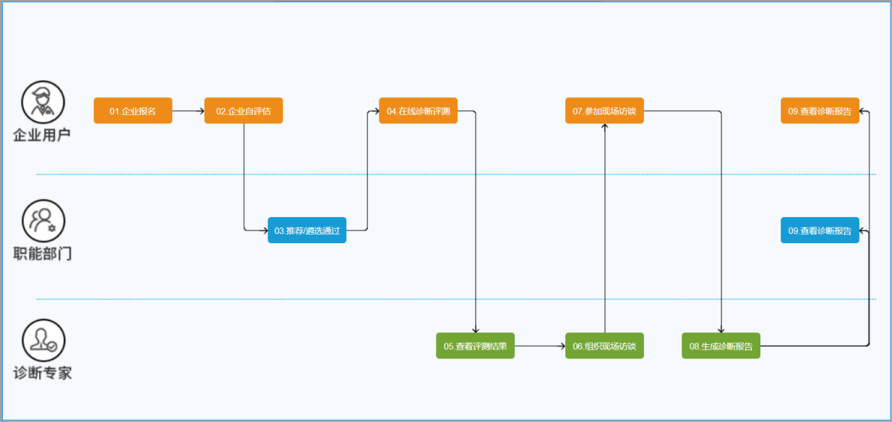图1江苏省两化融合诊断服务平台整体流程
江苏省两化融合诊断服务平台整体流程具体说明如下：
角色说明：完整的业务流程包括三个角色，分别为：企业用户、职能部门、诊断专家。
流程说明：
步骤1：职能部门组织各企业进行申报。
步骤2：企业用户进入江苏省两化融合诊断服务平台，进行企业报名和企业自评估。
步骤3：市级部门对提交申报企业，进行推荐，推荐成功能后，江苏省工业和信息化厅进行遴选。
步骤4：遴选通过后，系统可以在线诊断测评。
步骤5：诊断专家进行查看在线诊断测评结果，进行诊断，并生成诊断报告。
步骤6：企业用户及职能部门可以查询诊断报告。
功能操作流程
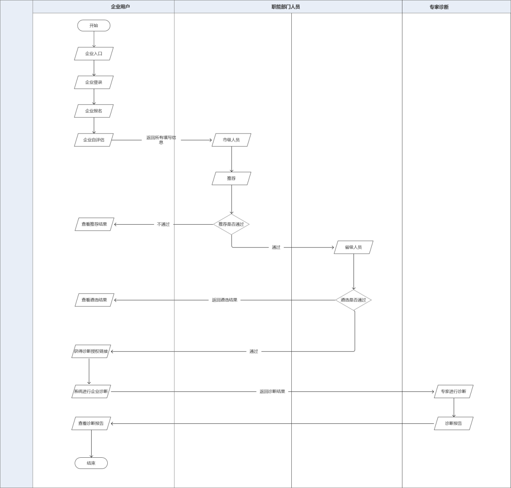图1江苏省两化融合诊断服务平台企业报名及推荐/遴选流程
具体说明如下：
角色说明：完整的报名及推荐/遴选业务包括二个角色，分别为：企业用户和职能部门。
流程说明：
步骤1：企业用户单击企业入口，系统验证是否登录。 若未登录，系统提示：请登录，进入到登录页面，进行登录。 若已登录，进入企业报名主页面
步骤2：企业用户在企业报名信息主页面，填写企业报名信息。
步骤3：企业用户提交填写的企业申报信息，系统提示“您的企业报名信息提交完成，请进行企业自评估”。
步骤4：企业用户进行企业自评，提交完成后，系统提示“您的自评估信息提交完成，请耐心等待职能部门推荐/遴选”。
步骤5：职能部门（市级人员）单击职能部门入口，系统验证是否登录。 若未登录，系统提示：请登录，进入到登录页面，进行登录。 若已登录，进入推荐主页面。
步骤6：职能部门（市级人员）在推荐主页面，选择企业，单击推荐。 推荐完成后，将推荐结果返回给企业用户，企业用户进入企业入口中职能部门推荐/遴选，可以查看推荐结果。 若市级人员推荐成功，则职能部门（江苏省工业和信息化厅）可以进行遴选；若市级人员推荐不成功，则职能部门（江苏省工业和信息化厅）不能进行遴选操作。
步骤7：职能部门（江苏省工业和信息化厅人员）单击职能部门入口，系统验证是否登录。 若未登录，系统提示：请登录，进入到登录页面，进行登录。 若已登录，进入遴选主页面。
步骤8：职能部门（江苏省工业和信息化厅人员）在遴选主页面，选择企业，单击遴选。 遴选完成后，将推荐结果返回给企业用户，企业用户进入企业入口中职能部门推荐/遴选，可以查看遴选结果。
步骤9：职能部门（江苏省工业和信息化厅人员）遴选通过后，企业用户获得诊断授权链接，系统进行企业诊断，并将诊断结果返回给专家诊断。
步骤10：专家进行诊断，并生成报告。 报告生成后，企业用户进入企业入口中查看诊断报告，可以查看专家生成的报告。
企业报名
前提条件
您需要有企业申报账号。
背景信息
企业根据自身需求，进行诊断申报。 每个企业用户，只能申报一个企业，若不推荐或遴选未通过，可以在下批次开放申报时再重新申报。
操作步骤
步骤1：在浏览器中，输入江苏省两化融合服务平台地址，进入江苏省两化融合服务平台首页面。
步骤2：单击企业申报申请，页面弹出企业申报主页面。
步骤3：单击立即报名，进入企业申报申请主页面。 在单击企业申报申请时，系统判断是否登录，分以下两种情况：
若未登录时，则系统提示“您尚未登录，请先登录！”，单击登录。 输入账户和密码进行登录。
若已登录，则直接跳转到企业申报申请主页面。
步骤4：填写企业申请相关信息，包括：企业报名和企业自评估。
其中：企业报名分别填写企业基本信息和企业联系信息；企业自评估需要企业用户根据企业需求，选择自评估项，并且填写自评估项信息。
输入企业基本信息，如下图所示： 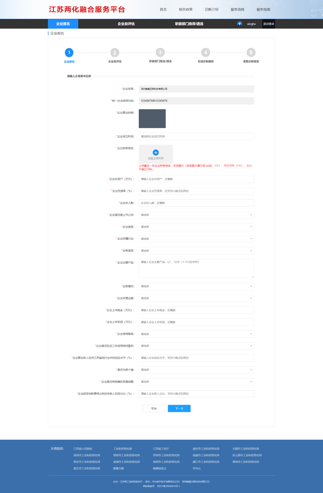
图1 输入企业基本信息
输入完成企业基本信息后，单击下一步，输入企业联系信息，如下图所示： 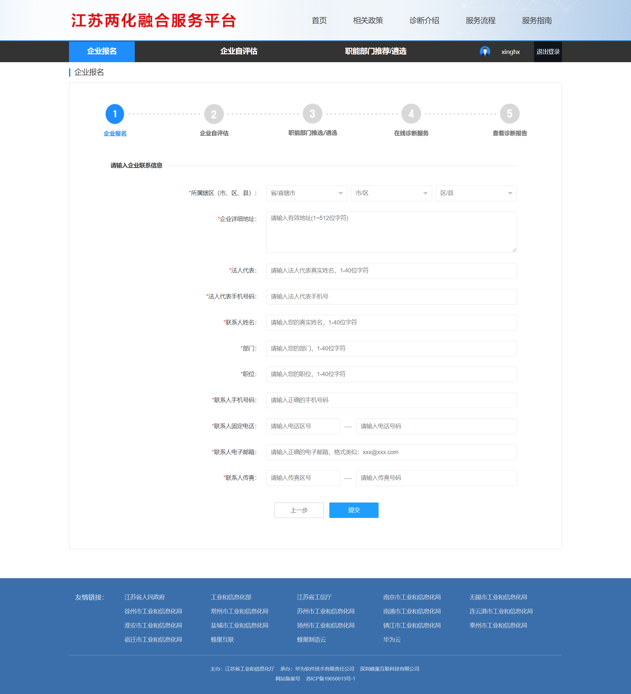
图2 输入企业联系信息
步骤5：所有信息填写完成后，单击提交，页面显示提交完成页面，并且提示企业用户需要执行企业自评估。
输入企业基本信息，如下图所示： 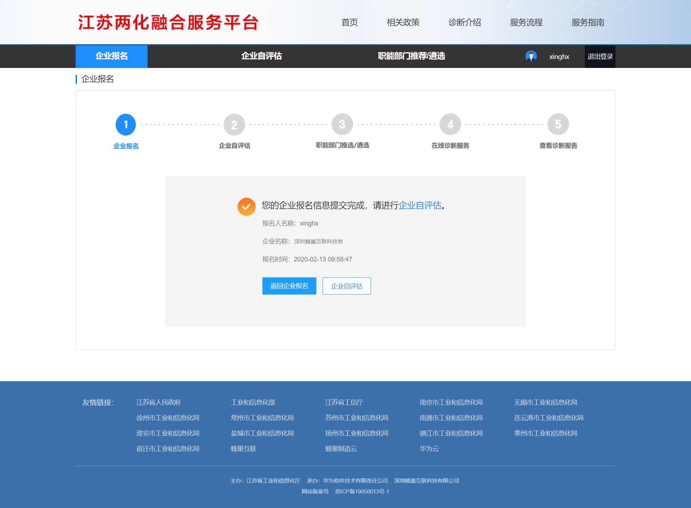
图3 提交完成
企业自评估
前提条件
您已登录江苏省两化融合服务平台。
背景信息
企业报名已完成。
只有企业报名已完成，才能进行企业自评估。
操作步骤
步骤1：进入企业入口主页面。
步骤2：在菜单栏中，单击企业自评估，页面跳转到企业自评估主页面。
精益生产成熟度诊断必选，其他企业自评估项支持多选。选择企业自评估项提交成功后，将不能再次进行选择。因此，请您根据请根据企业实际情况，正确选择两化融合企业自评估项。 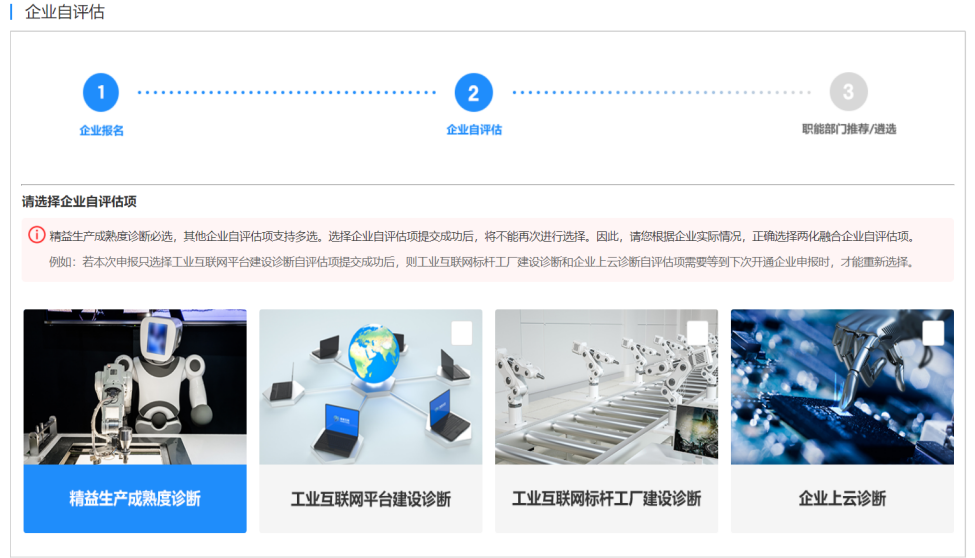
图1 企业自评估
步骤3：在企业自评估主页面中，选择企业自评估项。 企业自评估项包括：精益生产成熟度诊断、工业互联网平台诊断、工业互联网标杆工厂建设诊断、企业上云诊断，其中精益生产成熟度诊断系统自动默认选择，企业用户不能更改。
步骤4：单击下一步，页面提示“您确定只选择以下项进行企业自评估吗？”。
步骤5：单击确定，进入输入企业自评估项信息页面。 输入企业自评估项信息页面中，显示您在上一步所选择的企业自评估项。
步骤6：单击开始自评估。
您选择的企业自评估项，每一项都需要自评估，若遗漏未填写自评估，则系统将会进行提示，若自评估项信息未填写完成，职能部门不能进行推荐/遴选。
企业自评估完成后，您可以查看到企业自评信息和企业自评估结果，并且耐心等待职能部门推荐/遴选。
职能部门推荐/遴选
前提条件
您已登录江苏省两化融合服务平台。
背景信息
职能部门推荐/遴选完成。
操作步骤
步骤1：进入企业入口主页面。
步骤2：在菜单栏中，单击职能部门推荐/遴选，页面跳转到查看职能部门推荐/遴选主页面。
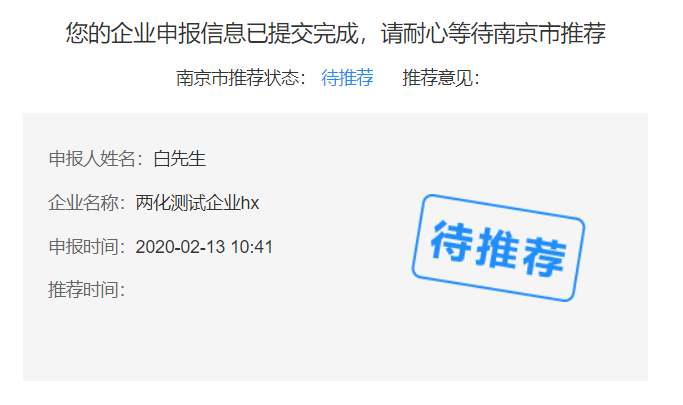
图1查看职能部门推荐/遴选信息
在线诊断测评
前提条件
您已登录江苏省两化融合服务平台。
背景信息
职能部门遴选已通过。 职能部门遴选未通过，则不能进行在线诊断测评。
操作步骤
步骤1：进入企业入口主页面。
步骤2：在菜单栏中，单击在线诊断测评，页面跳转到在线诊断测评主页面。
步骤3：系统自动在线诊断，诊断完成后，企业用户可以查看诊断报告。
说明：在线诊断不需要企业用户进行操作，此步骤为系统自动操作。
查看诊断报告
前提条件
您已登录江苏省两化融合服务平台。
背景信息
在线诊断测评已完成。 诊断专家将会依据在线诊断测评结果，对企业进行专业的诊断，并输出诊断报告。
操作步骤
步骤1：进入企业入口主页面。
步骤2：在菜单栏中，单击查看诊断报告，页面跳转到查看诊断报告主页面。
步骤3：在查看诊断报告主页面中，点击查看诊断报告，页面跳转到诊断报告页面。
职能部门（市级部门）推荐功能操作
前提条件
您需要有职能部门（市级部门）推荐账号。
背景信息
企业用户提交完企业申报后，职能部门（市级部门）需要对企业申报信息进行推荐。
职能部门（市级部门）推荐账号，可以让系统管理员进行创建、修改和删除。
操作步骤
步骤1：在浏览器中，输入江苏省两化融合服务平台地址，进入江苏省两化融合服务平台首页面。
步骤2：单击职能部门入口，进入职能部门（市级部门）推荐主页面。
在单击职能部门入口时，系统判断是否登录，分以下两种情况：
若未登录时，则系统显示登录页面，如下图所示： 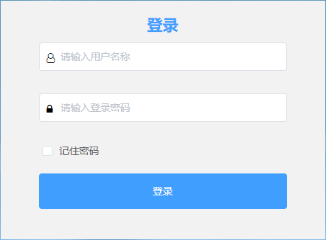
图1 职能部门登录页面
输入用户名和密码进行登录。
若已登录，则直接跳转到职能部门（市级部门）推荐主页面，如下图所示： 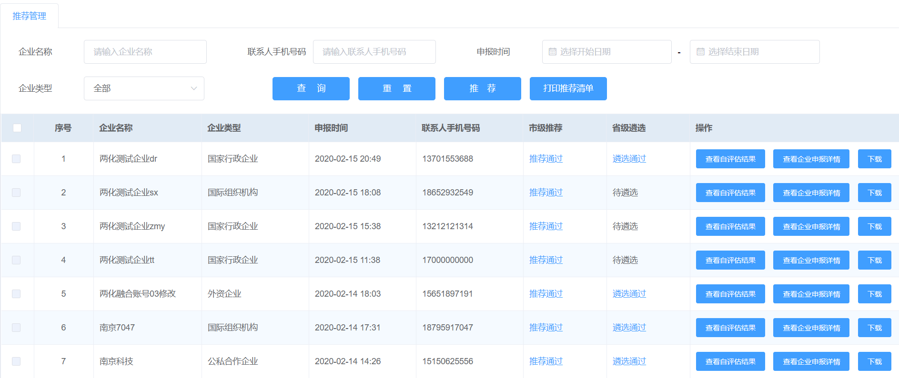
图2 职能部门（市级部门）推荐主页面
步骤3：在职能部门（市级部门）推荐主页面列表中，选择需要推荐的企业。
步骤4：单击推荐，页面弹出推荐页面，如下图所示：
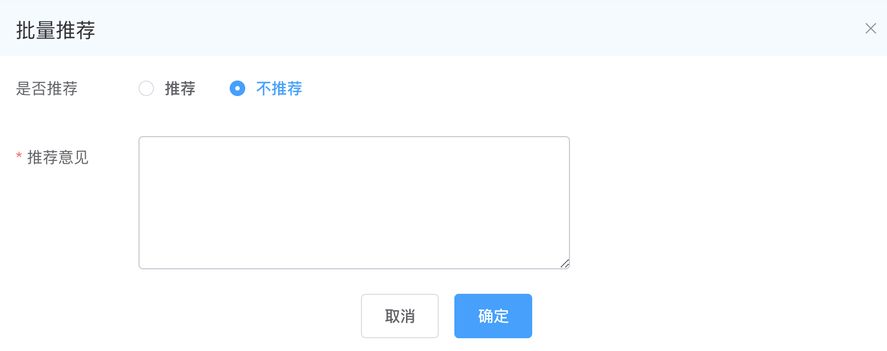
图12 职能部门（市级部门）页面
步骤5：在推荐页面的中，进行推荐，推荐信息如下：
是否推荐：包括推荐和不推荐
推荐意见：若在“是否推荐”中选择推荐，则推荐意见非必填；若在“是否推荐”中选择不推荐，则推荐意见必填。
步骤6：推荐信息填写完成后，单击确定，页面提示“推荐完成”。 推荐完成后，企业用户在职能部门推荐/遴选中，可以查看到推荐结果。
职能部门（江苏省工业和信息化厅）推荐功能操作
前提条件
您需要有职能部门（江苏省工业和信息化厅）遴选账号。
职能职能部门（市级部门）推荐成功后，职能部门（江苏省工业和信息化厅）需要对企业申报信息进行遴选。
背景信息
职能部门（江苏省工业和信息化厅）遴选账号，可以让系统管理员进行创建、修改和删除。
需要职能部门（市级部门）推荐该企业时，职能部门（江苏省工业和信息化厅）才能对市级部门推荐的企业进行遴选。
操作步骤
步骤1：在浏览器中，输入江苏省两化融合服务平台地址，进入江苏省两化融合服务平台首页面。
步骤2：单击职能部门入口，进入职能部门（江苏省工业和信息化厅）遴选主页面。
在单击职能部门入口时，系统判断是否登录，分以下两种情况：
若未登录时，则系统显示登录页面，如下图所示：
图1 职能部门登录页面
输入用户名和密码进行登录。
若已登录，则直接跳转到职能部门（江苏省工业和信息化厅）遴选主页面，如下图所示： 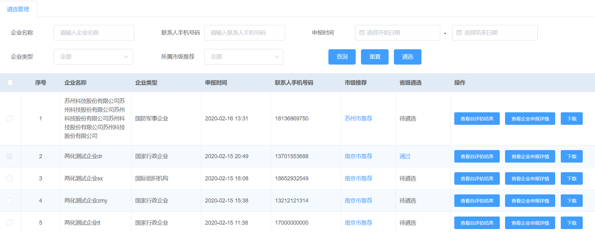
图2 职能部门（江苏省工业和信息化厅）遴选主页面
步骤3：在职能部门（江苏省工业和信息化厅）遴选主页面列表中，选择需要遴选的企业。
步骤4：单击遴选，页面弹出遴选页面，如下图所示：
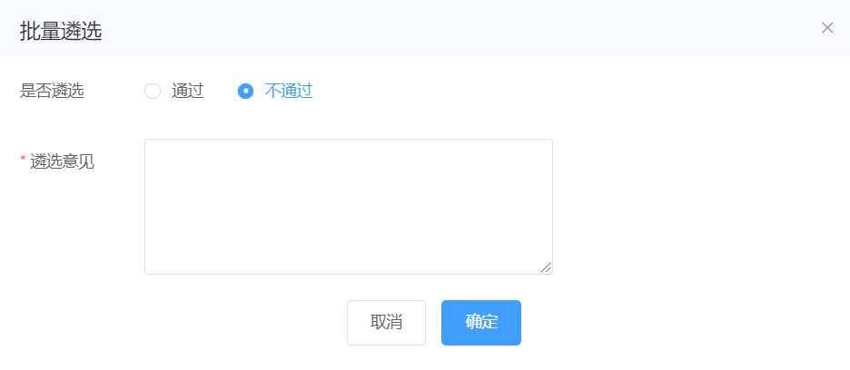
图12 职能部门（江苏省工业和信息化厅）页面
步骤5：在遴选页面的中，进行遴选，遴选信息如下：
是否通过遴选：包括通过和不通过
遴选意见：若在“是否通过遴选”中选择通过，则遴选意见非必填；若在“是否通过遴选”中选择不通过，则遴选意见必填。
步骤6：遴选信息填写完成后，单击确定，页面提示“遴选完成”。 遴选完成后，企业用户在职能部门推荐/遴选中，可以查看到遴选结果。